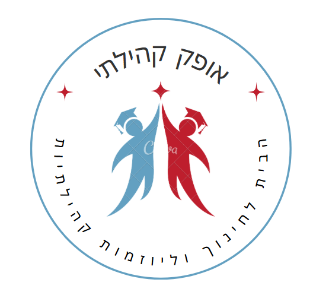

<div class="container navbar">
	<div class="logo-group">
		<a href="/" class="logo-text">אופק קהילתי</a>
		<a href="/" class="logo-image-link">
			
		</a>
		</div>
	<a href="index.html" class="logo">אופק קהילתי</a>
	<nav>
		<ul class="nav-links">
			<li><a href="index.html">דף הבית</a></li>
			<li><a href="about.html">עלינו</a></li>
			<li class="dropdown">
				<a href="#">תחומי פעילות <i class="fas fa-chevron-down"></i></a>
				<ul class="dropdown-menu">
					<li><a href="economy/economy.html">כלכלה</a></li>
					<li><a href="education/education.html">חינוך</a></li>
					<li><a href="environment/environment.html">סביבה</a></li>
					<li><a href="parenting/parenting.html">הורים וילדים</a></li>
					<li><a href="elderly/elderly.html">הגיל השלישי</a></li>
				</ul>
			</li>
			<li><a href="activities/activities.html">אירועים קרובים</a></li>
			<li class="dropdown">
				<a href="#">מאגר מידע <i class="fas fa-chevron-down"></i></a>
				<ul class="dropdown-menu">	
					<li><a href="knowledge/knowledge.html">הורה מורה</a></li>
					<li><a href="knowledge/knowledge.html">תוכניות גפן</a></li>
					<li><a href="knowledge/knowledge.html">העשרה</a></li>
					<li><a href="knowledge/knowledge.html">ספרים מומלצים</a></li>
					<li><a href="knowledge/knowledge.html">הרצאות</a></li>
				</ul>
			</li>
		</ul>
	</nav>
</div>

